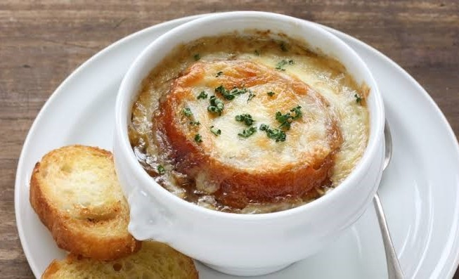

Name:
Type:
Course:
Main ingredients:
Soupe á l'oignon
French cuisine
Starter
Onions, beef or chicken stock, croutons, grated cheese
French onion soup (French: soupe à l’oignon [sup a lɔɲɔ̃]) is a type of soup usually based on meat stock and onions, and often served gratinéed with croutons and cheese on top of a large piece of bread. Although ancient in origin, the dish underwent a resurgence of popularity in the 1960s in the United States due to a greater interest in French cuisine. French onion soup is usually served as a starter.